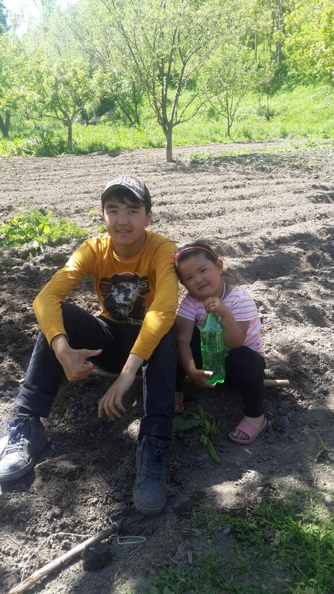
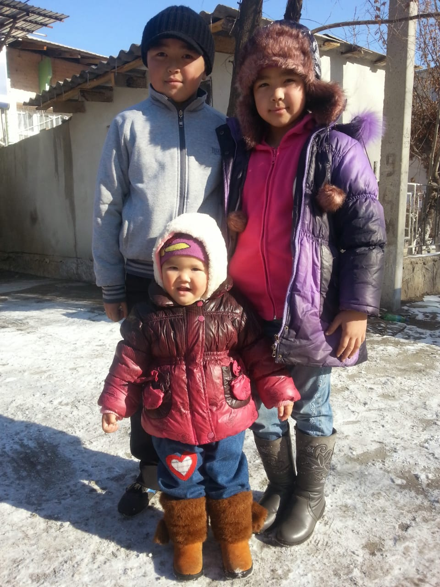

НАБИЕВ МУСТАФА
(23.01.2003-ж)
Набиев Мустафа Надырович 2003-жылыдын 23-январда Ош облусуна караштуу Бек Жар айылында жарык дүйнөгө келген.Анын бала чакгы өтө жакшы өткөн.
Атасы Надыр Набиев ал эми апасы Жыпаргул Келдибаева.Мустафанын бала чагы Бек Жар айылында өткөн.Ал 1 жашка толгондо атасы жана апасы өздөрүнүн иштеген жерине алып барып карашкан.Анын ичинен жип менен байлап койуп өз иштерин аткарып жүрө беришкен. Мустафа өтө жоош болгондуктан өз алдындагы оючуктарын ойноп олтура берген.Бир күнү малдарга бериле турган даарыны жеп алган.Азыркы кезде Мустафанын боюнун узун болуп калышына ошол даары себеп деп үйүндөгүлөр күлүшөт.

Мустафанын чон атасы Набий Абдуллаев ал эми чоң энесинин аты Мария Исмаилова.Ал кичинекейинен көбүнчө чоң ата чоң энесинин колунда тарбияланган.Мустафага жакшы тарбия берген.Азыркы кезде Мустафа аларга өтө чооң ыраазы болууда.Мустафа 5 бир тууган.2 уул 3 кыз.Эң чоңу Мустафа.

